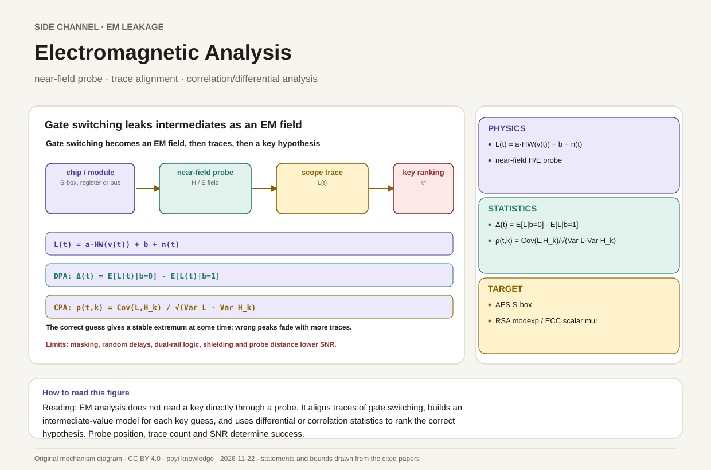
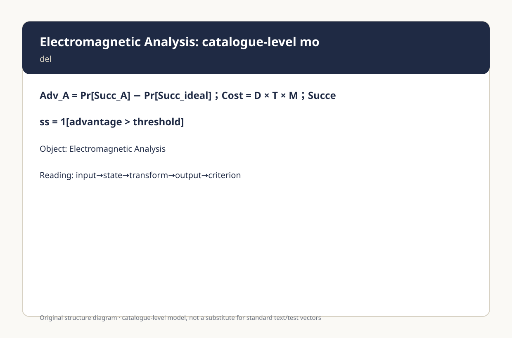

Principles
Attack: Electromagnetic Analysis (电磁分析). ### The physical entry point of EM leakage
A CMOS gate draws a transient current when it switches, and the interconnect and package radiate an electromagnetic field that varies with the operation. Place a probe near a decoder, register or bus and sample it with an oscilloscope; the result is an EM trace aligned to time. A simplified leakage model is
L(t) = a·HW(v(t)) + b + n(t),
where a is the gain, HW is the Hamming weight of the intermediate value, b is a static offset and n is noise. This is not a full physical simulation of the chip; it is the approximation an attacker uses to rank key hypotheses. ### From traces to key hypotheses
For each key guess k, compute the model H_k(t) of the target intermediate value v_k(t), then compare it with the observed trace L(t). DPA compares the mean difference between the groups whose guessed bit is 0 and 1:
Δ(t) = E[L(t) | b=0] - E[L(t) | b=1]. CPA computes the Pearson correlation:
ρ(t,k) = Cov(L(t), H_k(t)) / √(Var L(t) · Var H_k(t)). The correct key produces a stable extremum at some time; peaks from wrong hypotheses fade as more traces are added. ### Why it is “analysis”, not “reading”
An EM probe picks up a near field that superposes several modules, so time alignment, triggering, denoising and averaging are needed to isolate the target operation. It does not directly reveal key bits; it turns physical leakage into a testable statistical hypothesis. Trace count, SNR and probe position determine whether recovery works.

Why it matters
EM and power analysis share the same statistical core: choose an intermediate value, build a leakage model, partition traces by hypothesis, and compare means or correlations. The difference is the sensor and spatial selectivity: an EM probe can sit near a local module, reduce unrelated circuit contributions, and sometimes bypass shielding inside a package.
Algorithm-level masking, hiding and constant-time code can reduce data-dependent leakage, but the probe, package, supply and clock can still carry residual leakage. An evaluation must consider the algorithm implementation, the physical package and the acquisition conditions together.
Smart cards, HSMs, TEEs, MCUs and hardware wallets all need side-channel threats in their models. Designers should run leakage evaluations, not just functional tests; “the algorithm is AES-256” does not imply “the device resists EM analysis”.
Applications
- Choose the target operation and intermediate value, such as the first-round AES S-box output, an RSA modexp word, or an ECC scalar-multiplication branch. 2. Fix the probe position and use an external trigger to align each operation; record many traces with their inputs. 3. Denoise, align and reject outlier traces; estimate SNR and the required trace count. 4. Compute DPA differences or CPA correlations for key guesses, rank the peaks, and re-test the top candidates. 5. Calibrate on a test chip with a known key, then acquire from the target; the report must separate laboratory conditions from remote or non-contact conditions.
AES/DES S-boxes, RSA modexp, ECC scalar multiplication, KEM decoding and hardware-wallet mnemonic derivation are common EM leakage targets.

Limits & attacks
- Masking: the secret is split into random shares, weakening the correlation between a single trace point and the intermediate value; higher-order analysis needs more traces and a more complex model. 2. Hiding: random delays, clock jitter, dual-rail logic, noise injection and constant-current logic reduce alignment and SNR. 3. Physical protection: shielding, in-package filtering, difficult probe access and increased distance. 4. Implementation differences: asynchronous circuits, low-power processes and strong noise can invalidate a simple Hamming model. 5. Acquisition conditions: unstable triggering, unaligned traces or a shifted probe directly destroy the statistics. 6. Authorisation and evidence: without laboratory equipment and lawful authorisation, “theoretically possible” must not be written as “reproduced on a real device”.
EM analysis can recover keys, but it does not guarantee success on every device or implementation; one success is not a universal attack tool. A report must state the device, probe, trace count, SNR and verification key.
History
In 2001 Quisquater and Samyde systematised electromagnetic analysis (EMA) and its countermeasures; in the same year Gandolfi, Mourtel and Olivier experimented on three CMOS chips running DES, COMP128 and RSA, and reported recovery of complete key material. DEMA, CPA, template attacks and higher-order analysis later became standard tools of side-channel evaluation.
Modern secure chips combine shielding, masking, random delays and sensors; evaluation has moved from “can one key be recovered” to “how much advantage remains under a given trace budget and leakage model”. This is why a side-channel evaluation must be reported together with the device’s physical package.
Worked example & verification
Formal model and reproduction steps
[\mathrm{Adv}^{\mathrm{attack}}_A(\lambda)=\Pr[\mathrm{Game}_A(\lambda)=1]-\frac12]
Electromagnetic Analysis: the registered public parameters, key material or randomness, and message are mapped through the stated transformation to an output checked against the registered criterion. The worked example is a structural reproduction, not a new test vector; parameter ranges, standard versions and implementation details remain source-bound.
References
- Wikipedia search entry for 电磁分析. https://zh.wikipedia.org/w/index.php?search=%E7%94%B5%E7%A3%81%E5%88%86%E6%9E%90
- Handbook of Applied Cryptography (Menezes, van Oorschot, Vanstone). https://www.cacr.math.uwaterloo.ca/hac/